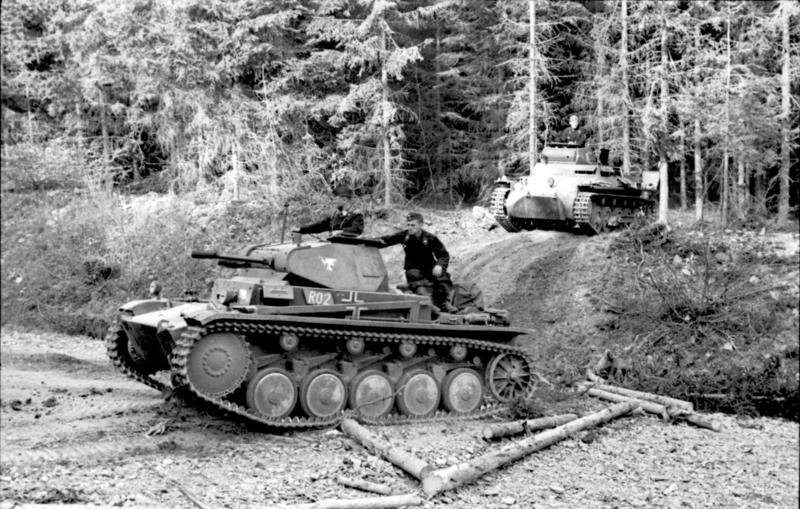
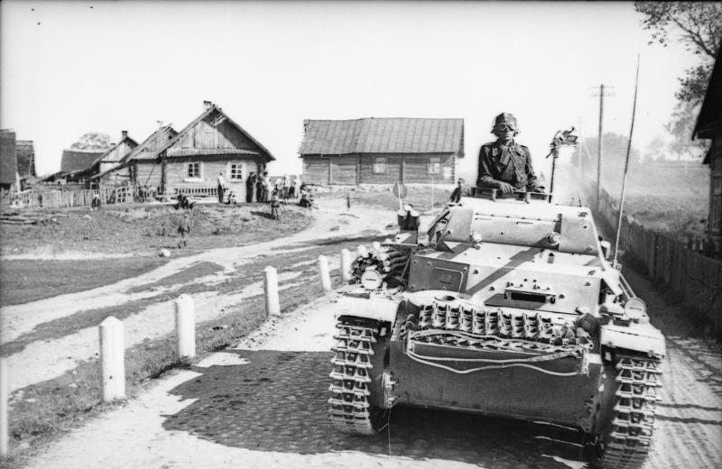

The Panzer II is the common name used for a family of German tanks used in World War II. The official German designation was Panzerkampfwagen II (abbreviated PzKpfw II).
Although the vehicle had originally been designed as a stopgap while larger, more advanced tanks were developed, it nonetheless went on to play an important role in the early years of World War II, during the Polish and French campaigns. The Panzer II was the most numerous tank in the German Panzer divisions at the beginning of the war. It was used both in North Africa against the Western Allies and on the Eastern Front against the Soviet Union.
The Panzer II was supplanted by the Panzer III and IV medium tanks by 1940/1941. By the end of 1942, it had been largely removed from front line service and it was used for training and on secondary fronts. The turrets of the then-obsolete Panzer Is and Panzer IIs were reused as gun turrets on specially built defensive bunkers, particularly on the Atlantic Wall. Production of the tank itself ceased by January 1944, but its chassis remained in use as the basis of several other armoured vehicles, chiefly self-propelled artillery and tank destroyers such as the Wespe and Marder II respectively.

The Panzer II was designed before the experience of the Spanish Civil War of 1936-39 showed that protection against armour-piercing shells was required for tanks to survive on a modern battlefield. Prior to that, armour was designed to stop machine gun fire and high-explosive shell fragments.
The Panzer II Ausf. A to C had 14 mm of slightly sloped homogeneous steel armour on the sides, front, and back, with 10 mm of armour on the top and bottom. Most of them were later given increased armour in the front of the vehicle, most noticeable by the changed appearance of the front hull from rounded to boxy shape. Starting with the D model, the front armour was increased to 30 mm. The Model F had 35 mm front armour and 20 mm side armour. This level of protection was still only proof against small arms fire. This amount of armour could be penetrated by towed antitank weapons, such as the Soviet 45mm, the British 2 Pdr and the canon de 47.
Most tank versions of the Panzer II were armed with a 2 cm KwK 30 L/55 auto-cannon. Some later versions used the similar 2 cm KwK 38 L/55. This auto-cannon was based on the 2 cm FlaK 30 anti-aircraft gun, and was capable of firing at a rate of 600 rounds per minute (280 rounds per minute sustained) from 10-round magazines. A total of 180 shells were carried.
The Panzer II also had a 7.92 mm Maschinengewehr 34 machine gun mounted coaxially with the main gun.
The 2 cm autocannon proved to be ineffective against many Allied tanks, and experiments were conducted with a view to replacing it with a 37 mm cannon, but nothing came of this. Prototypes were built with a 50 mm tank gun, but by then the Panzer II had outlived its usefulness as a tank regardless of armament. Greater success was had by replacing the standard 2 cm armour-piercing explosive ammunition with tungsten cored solid ammunition, but due to shortages of tungsten this ammunition was in chronically short supply.
All production versions of the Panzer II were fitted with a 140 PS (138 HP), gasoline-fuelled six-cylinder Maybach HL62 TRM engine and ZF transmissions. Models A, B, and C had a top speed of 40 km/h (25 mph). Models D and E had a torsion bar suspension and a better transmission, giving a top road speed of 55 km/h (33 mph) but the cross country speed was much lower than previous models, so the Model F reverted to the previous leaf spring type suspension. All versions had a range of 200 km (120 mi).
The Panzer II had a crew of three men. The driver sat in the forward left hull with the gearbox on the right. The commander sat in a seat in the turret, and was responsible for aiming and firing the cannon and co-axial machine gun, while a loader/radio operator sat on the floor of the tank behind the driver. He had a radio on the left and several 20mm ammunition storage bins.

Not to be confused with the later Ausf. A (the sole difference being the capitalization of the letter A), the Ausf. a was the first version of the Panzer II to be built (albeit in limited numbers), and was subdivided into three sub-variants. The Ausf. a/1 was initially built with a cast idler wheel with rubber tire, but this was replaced after ten production examples with a welded part. The Ausf. a/2 improved engine access problems. The Ausf. a/3 included improved suspension and engine cooling. In general, the specifications for the Ausf. a models was similar, and a total of 75 were produced from May 1936 to February 1937 by Daimler-Benz and MAN. The Ausf. a was considered the 1 Serie under the LaS 100 name.
Again, not to be confused with the later Ausf. B, the Ausf. b was the second limited production series embodying further developments, primarily a heavy reworking of suspension components resulting in a wider track and a longer hull. Length was increased to 4.76 metres but width and height were unchanged. Additionally, a Maybach HL62 TR engine was used with new drivetrain components to match. Deck armour for the superstructure and turret roof was increased to 10-12 mm.[14] Total weight increased to 7.9 tonnes. Twenty-five were built by Daimler-Benz and MAN in February and March 1937.
As the last of the developmental limited production series of Panzer IIs, the Ausf. c came very close to matching the mass production configuration with the replacement of the six small road wheels with five larger independently sprung road wheels and an additional return roller. The tracks were further modified and the fenders widened. Total length increased to 4.81 m (15 ft 9 in) and width to 2.22 m (7 ft 3 in). At least 25 of this model were produced from March through July 1937.
The first true production model, the Ausf. A, included an armour upgrade to 14.5 mm (0.57 in) on all sides, as well as a 14.5 mm floor plate, and an improved transmission. It entered production in July 1937 and was superseded by the Ausf. B in December 1937, which introduced only minimal changes.
A few minor changes were made in the Ausf. C version, which became the standard production model from June 1938 through April 1940. A total of 1,113 examples of Ausf. c, A, B, and C tanks were built from March 1937 through April 1940 by Alkett, FAMO, Daimler-Benz, Henschel, MAN, MIAG, and Wegmann. These models were almost identical and were used in service interchangeably. This was the most widespread tank version of the Panzer II. Earlier versions of Ausf. C have a rounded hull front, but many had additional armour plates bolted on the turret and hull front. Some were also retro-fitted with commander's cupolas.
With a completely new torsion bar suspension with four road wheels, the Ausf. D was developed as a tank for use in the light divisions. After the invasion of Poland the light divisions were converted to Panzer divisions. Only the turret was the same as the Ausf. C model, with a new hull and superstructure design and the use of a Maybach HL62TRM engine driving a seven-gear transmission (plus reverse). The design was shorter (4.65 m) but wider (2.3 m) and taller (2.06 m) than the Ausf. C. Speed was increased to 55 km/h. A total of 43 Ausf. D tanks were built from October 1938 through March 1939 by MAN, and they served in Poland. They were withdrawn in March 1940 for conversion to the flame tank Panzer II (Flamm). The Ausf. E differed from the Ausf. D by having lubricated tracks; seven chassis were completed.
Continuing the conventional design of the Ausf. C, the Ausf. F superstructure front was made from a single piece of armour plate with a redesigned visor. Also, a dummy visor was placed next to it to confuse enemy gunners. The hull was redesigned with a flat 35 mm (1.4 in) plate on its front, and the armour of the superstructure and turret were built up to 30 mm (1.2 in) on the front with 15 mm (0.59 in) to the sides and rear. There was some minor alteration of the suspension and a new commander's cupola as well. Weight increased to 9.5 tonnes. From March 1941 to July 1942, 509 were built; this was the final major tank version of the Panzer II series.
Based on the same suspension as the Ausf. D and Ausf. E tank versions, the Flamm (also known as "Flamingo") used a new turret mounting a single MG34 machine gun, and two remotely controlled flamethrowers mounted in small turrets at each front corner of the vehicle. Each flamethrower could cover the front 180° arc, while the turret traversed 360°.
The flamethrowers were supplied with 320 litres of fuel and four tanks of compressed nitrogen. The nitrogen tanks were built into armoured boxes along each side of the superstructure. Armour was 30 mm to the front and 14.5 mm to the side and rear, although the turret was increased to 20 mm at the sides and rear.
Total weight was 12 tonnes and dimensions were increased to a length of 4.9 m and width of 2.4 m although it was a bit shorter at 1.85 m tall. A FuG2 radio was carried.
One hundred and fifty-one Panzerkampfwagen II (F) (Flamm) vehicles were built from April 1940 through March 1942. Initial production of Ausf. A vehicles was based on 46 Panzer II Ausf. D/E chassis that were never completed as tanks, in March 1940 the 43 still existing Panzer II Ausf. D were recalled for conversion and from August 1941 until the cancellation in March 1942 a further 62 Ausf. B vehicles were made from new-production Ausf. D chassis (out of an order for 150 vehicles). The Panzer II (F) was deployed in the USSR, but was not very successful due to its limited armor, and survivors were soon withdrawn for conversion to Marder II tank destroyers in December 1941.